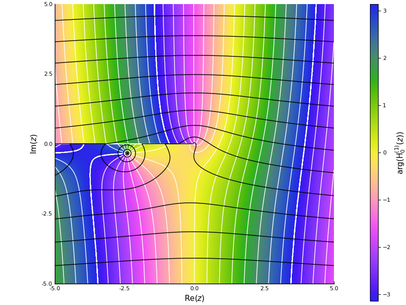
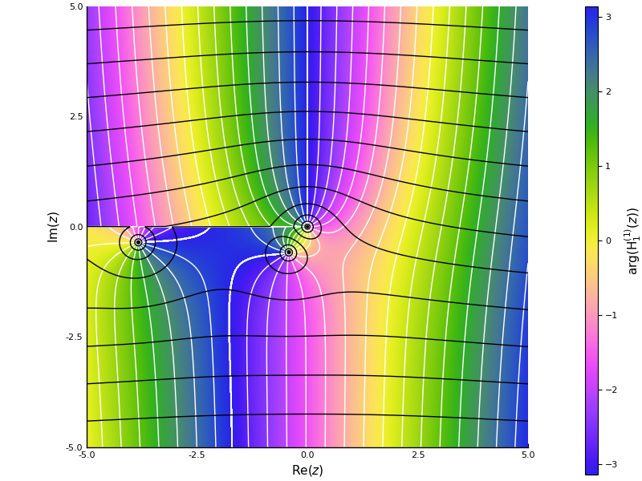
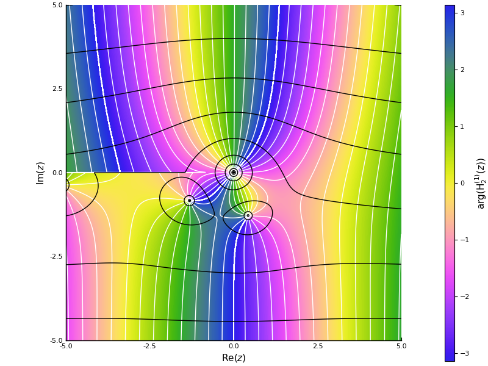
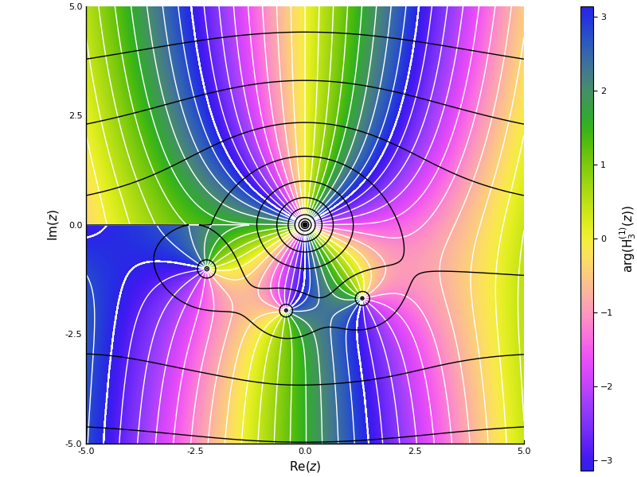
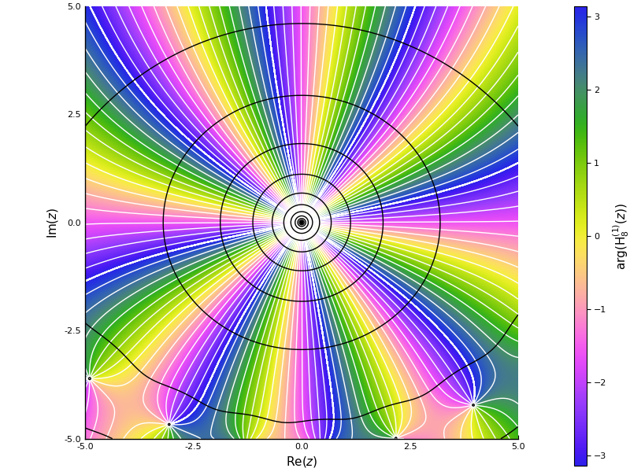

Inverse Hankel function branches
To understand the branches in the inverse of the Hankel function, we look at the behaviour of several Hankel functions near the origin. The white contours are constant argument, and the black lines are constant magnitude. We can tell that there are multiple branches in all of these cases. For example, in the first plot, following a line of constant magnitude in the upper half, we can see multiple points with the same argument. These points are multiple solutions (z) for a particular value of the the Hankel function (h).
As we increase the order of the Hankel function (which we will denote by m), we see the small argument (z≈0) (asymptotics)[asymptotics] become clearer, with a zero of multiplicity equal to m. Therefore around z=0 we see that there will be at least m branches of the inverse of the Hankel function. This motivates us to start our enumeration of our branches here, indexed by b
Contour plots of constant argument and magnitude for Hankel functions against complex z
0th order Hankel function

1st order Hankel function

2nd order Hankel function

3rd order Hankel function

8th order Hankel function
